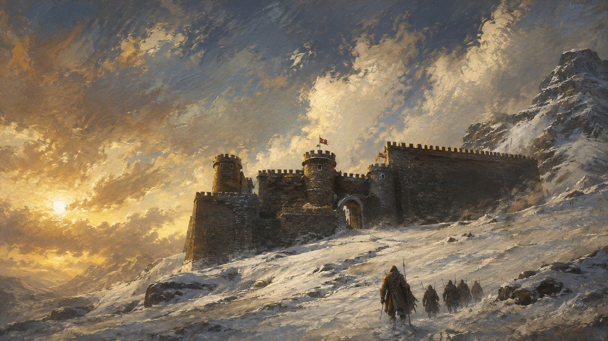
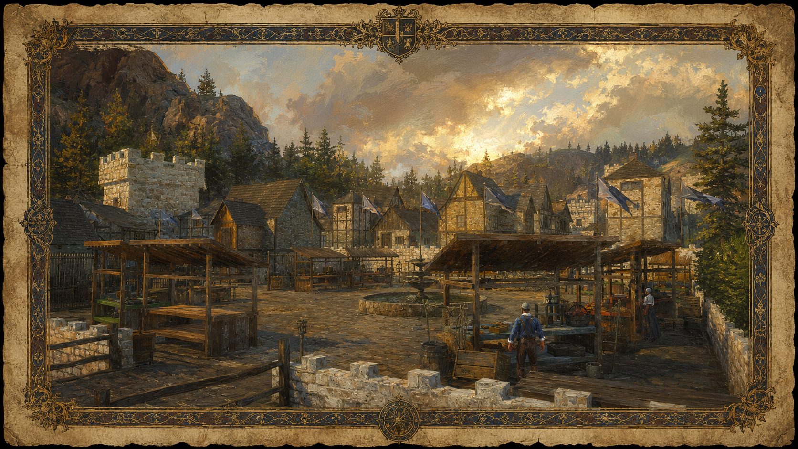

GUIDEMedieval Online RP · Thailand

เรื่องควรรู้ก่อนกรอก Whitelist
“เรามาสวมบทบาท ไม่ใช่มาจำลองความสมจริง”
“คำตอบที่ถูกต้อง สำคัญกว่าคำตอบที่ยาว ตอบสั้นแต่ถูก ดีกว่าตอบยาวแต่ผิด”
การเขียนเนื้อเรื่องตัวละครต้องเข้ากับโลกของ Erde พื้นที่ปัจจุบันคือ Veloria เป็นทวีปที่เข้าถึงจากโลกภายนอกได้ยากมาก เพราะถูกล้อมรอบด้วย Wraithwinds มีอานาจักรที่คนอาศัยอยู่ได้ตอนนี้คือ Frostmarch และ Rivenvale เชื่อกันว่าทั้งสองอาณาจักรมีต้นกำเนิดจากผู้รอดชีวิตของสังคมใต้ดิน Lumerian
ตัวละครที่สร้างควรจะมาจากในทวีป Veloria เท่านั้น ทั้งนี้เป็นไปได้ที่ตัวละครจะมีเชื้อสายจากทวีปอื่น แต่เพื่อให้แน่ใจว่า ผู้เล่นสร้างตัวละคร เป็นไปตามแนวทางของเซิฟเวอร์ สามารถเข้ามาปรึกษาผ่าน Ticket ใน Discord ของเซิฟเวอร์ได้ตลอด


Erde's Timeline
ประวัติศาสตร์ช่วงนี้คือการเปลี่ยนแปลงจากโลกที่ผู้คนยังสามารถอาศัยอยู่ในพื้นที่ใต้ดินและต้องหลบภัยจากภัยธรรมชาติ/เหนือธรรมชาติ ไปสู่โลกใน ค.ศ. 1300 ซึ่งเป็นช่วงเวลาที่ตัวละครผู้เล่นเข้ามามีชีวิตและสร้างเรื่องราวของตนเอง
ค.ศ. 1000 ยุคอพยพสู่ใต้ดิน : เมือง Frostmarch ถูกสร้างขึ้นเป็นหลักประกันแห่งความหวัง แต่ภัยพิบัติ Wraithwind ทวีความรุนแรงและทารุณจนบนพื้นดินไม่ใช่อาศัยได้อีกต่อไป ผู้คนจึงจำเป็นต้องทิ้งเมืองและอพยพลงไปสร้างอารยธรรม ชุมชน และระบบสังคมอยู่ใต้ดินเพื่อความอยู่รอด
ค.ศ. 1150 ยุคแห่งการคืนสู่ผืนดิน : พายุ Wraithwind เริ่มสงบลงและเบาบางลงอย่างเห็นได้ชัด มนุษย์เริ่มก้าวออกจากเมืองใต้ดินเพื่อกลับมาตั้งตั้งรกรากบนพื้นดินอีกครั้ง พร้อมกับฟื้นฟูความรู้และวิถีชีวิตเดิม
ค.ศ. 1151 การกำเนิด Rivenvale : หลังจากการกลับขึ้นมาบนพื้นดินเพียงหนึ่งปี เมือง Rivenvale ได้ถูกสร้างขึ้นเพื่อเป็นหมุดหมายใหม่ของการขยายขอบเขตและฟื้นฟูอารยธรรม
ค.ศ. 1200 – 1290 ยุคแห่งการฟื้นตัวและการขยายตัว : สังคมเริ่มมั่นคง มีการฟื้นฟูเส้นทางการค้า ชุมชนรอบ Frostmarch และ Rivenvale เติบโตขึ้นอย่างรวดเร็ว มนุษย์เริ่มตั้งคำถามถึงอดีต และเรียนรู้ที่จะอยู่ร่วมกับข้อจำกัดของโลกใบนี้
ค.ศ. 1300 ยุคปัจจุบัน (จุดเริ่มต้นของผู้เล่น) : ยุคสมัยแห่งโอกาสและการสร้างตัวตนของผู้คนธรรมดา ไม่ว่าจะเป็นช่างฝีมือ พ่อค้า นักล่า ทหารเลว หรือนักเดินทาง ทุกคนเริ่มต้นจากจุดเล็กๆ เพื่อเขียนประวัติศาสตร์หน้าใหม่ผ่านการเดินทางของตัวเอง
เพราะหัวใจของเรื่องราวใน ค.ศ. 1300 คือ ตัวละครไม่ได้เกิดมาเป็นคนสำคัญ แต่สามารถสร้างตัวเองให้กลายเป็นคนสำคัญได้ผ่านการ Roleplay
ทวีปอื่นๆ (Lumeria, Thallassara และดินแดนห่างไกล)
การเชื่อมต่อที่ถูกตัดขาด : การเดินทางข้ามทวีปในปัจจุบันเป็นไปได้ยากลำบากและอันตรายอย่างยิ่ง เนื่องจากผลกระทบของ Wraithwind ที่ยังคงปกคลุมมหาสมุทรและน่านฟ้า
ชะตากรรมของอารยธรรม : ทวีปอื่นทั่วโลกยังคงมีผู้รอดชีวิต โดยตั้งถิ่นฐานกระจายกันอยู่ใน "เขตปลอดภัย" (Safe Zones) ที่พายุเบาบางหรือเข้าไม่ถึง
การสูญสิ้นและอยู่รอด : ผลกระทบของ Wraithwind ทำให้บางเมืองและบางอารยธรรมล่มสลายจนไม่เหลือซาก ในขณะที่บางแห่งสามารถปรับตัวและเอาชีวิตรอดมาได้ในรูปแบบที่แตกต่างกันไป
ระบบศาสนา ลัทธิ และความเชื่อ
อิสระแห่งศรัทธา : ในโลกของ Erde ไม่มีศาสนจักรหลักหรือศาสนาที่ถูกกำหนดไว้ตายตัว
ผู้เล่นคือผู้สร้าง : ผู้เล่นมีความอิสระอย่างเต็มที่ในการคิดค้น ถ่ายทอด และก่อตั้งศาสนา ลัทธิ นิกาย หรือความเชื่อพื้นถิ่นขึ้นมาเอง เพื่อใช้ประกอบการ Roleplay และสร้างมิติให้กับตัวละครหรือชุมชนของตน
ตัวละครที่เหมาะสม ควรเป็นคนธรรมดา
เช่น ช่างฝีมือ พ่อค้า ชาวนา นักเดินทาง อาชญากร หรือหมอ/ผู้รักษา และต้องมีเหตุผลที่สมจริงว่าทำไมถึงมาอยู่ใน Frostmarch หรือ Rivenvale สิ่งที่ห้าม ได้แก่ การเป็น Royal หรือ Noble ตั้งแต่เริ่มต้น การมีอำนาจทางการเมืองสูง การเป็น Maester การมีพลังเวทมนตร์จริงหรือพลังเหนือธรรมชาติมาแต่กำเนิด การอ้างว่ามาจากทวีปไกล ๆ โดยไม่มีเหตุผลรองรับ การใช้ชื่อบุคคลจริง การใช้ชื่อจากตัวละคร RDR และการใช้ชื่อ Meme/Joke
โดยเฉพาะ Maester ผู้เล่นไม่สามารถสร้างตัวละครที่เป็น Maester หรือมีความเกี่ยวข้องทางประวัติศาสตร์กับ Maesters Guild ได้ (แต่ผู้เล่นสามารถดำเนินบทบาทในเซิร์ฟเวอร์จนมาเป็น Maester ได้)
ตัวละครที่ดีควรเป็นแบบไหน?
ชื่อ First Name + Last Name มีอาชีพและ Background ที่สมเหตุสมผลกับช่วงประมาณ ค.ศ.1300 มีประวัติที่ส่งผลต่อนิสัยของตัวละคร แต่ไม่เวอร์จนเกินไป
และที่สำคัญ: ต้องมีเหตุผลที่ชัดเจนว่าทำไมตัวละครถึงมาอยู่ที่ Frostmarch หรือ Rivenvale
การนำเสนอตัวละครสำคัญในเนื้อเรื่องหลัก กลุ่มองค์กรที่ส่งผลกระทบต่อโลก หรือเหตุการณ์ขนาดใหญ่ที่มีอิทธิพลต่อโลก (โดยเฉพาะแนวเหนือธรรมชาติ) โดยไม่ได้รับการอนุมัติผ่าน ticket ล่วงหน้า จะถือเป็นความผิดที่สามารถถูกแบนได้ ไม่ว่าคุณจะมีเจตนาอย่างไรก็ตาม คุณไม่สามารถสร้างตัวละครหรือเหตุการณ์ที่ส่งผลกระทบต่อโลกโดยรวม หรือเกี่ยวข้องกับ lore ระดับโลกที่ยังไม่ได้รับการอนุมัติได้ด้วยตัวเอง
ตัวละครของคุณต้องเริ่มต้นในฐานะ “คนธรรมดา” เท่านั้น ห้ามมีตำแหน่งขุนนาง เชื้อสายราชวงศ์ การยอมรับทางการเมือง หรืออำนาจใด ๆ อยู่ใน backstory ตั้งแต่เริ่มต้น นอกเหนือจากการถูกปฏิเสธแล้ว สิ่งสำคัญคือคุณควรเข้าใจว่าทำไมเรื่องนี้จึงมีความสำคัญสำหรับตัวคุณในฐานะผู้เล่น ตัวละครที่เริ่มต้นมาพร้อมตำแหน่งหรืออำนาจ จะไม่มีเส้นทางให้เติบโต เพราะเรื่องราวของเขาถูกเขียนจบไปแล้วตั้งแต่ยังไม่เริ่ม
แต่ตัวละครที่เริ่มจากคนธรรมดา มีอาชีพ มีอดีต และมีเส้นทางเปิดกว้างรออยู่ข้างหน้า จะมีทุกอย่างให้ได้เล่นต่อ
ตำแหน่ง ชื่อเสียง และการยอมรับ ทั้งหมดนี้สามารถสร้างขึ้นได้ในโลกนี้ และการได้มันมาผ่านการเล่นต่อหน้าผู้คนที่เห็นทุกก้าว จะมีคุณค่ามากกว่าสิ่งที่เขียนไว้ในประวัติใด ๆ
ตัวละครที่น่าจดจำที่สุดในเซิร์ฟเวอร์นี้ ไม่ได้เริ่มต้นจากความยิ่งใหญ่ แต่พวกเขากลายเป็นคนสำคัญในภายหลัง
โลกใบนี้ได้รับแรงบันดาลใจจากยุคกลาง แต่ไม่ได้ถูกพันธนาการด้วยหน้าหนึ่งในหนังสือประวัติศาสตร์
Medieval RP Thailand เป็นเซิร์ฟเวอร์ที่ได้รับแรงบันดาลใจจากโลกยุคกลาง ไม่ว่าจะเป็นการแต่งกาย สถาปัตยกรรม วัฒนธรรม ชนชั้น และวิถีชีวิตของผู้คน แต่ในขณะเดียวกัน โลกแห่งนี้ก็มีสิ่งที่ไม่เคยมีอยู่จริงในประวัติศาสตร์
- มังกรที่บินอยู่เหนือเทือกเขา
- ก็อบลินที่ซุ่มโจมตีนักเดินทาง
- คำทำนายโบราณที่ถูกลืมเลือน
- อาณาจักรที่ถูกสร้างขึ้นใหม่
- เหตุการณ์และตำนานที่ไม่เคยปรากฏในโลกของเรา
หากจะเปรียบเทียบให้เห็นภาพ โลกของเรามีความใกล้เคียงกับ Game of Thrones, The Witcher หรือ Lord of the Rings มากกว่าการจำลองยุโรปในศตวรรษใดศตวรรษหนึ่งอย่างเคร่งครัด
ผู้เล่นบางท่านอาจตั้งคำถามว่า "ในประวัติศาสตร์จริง ยุคนี้ยังไม่มีสิ่งนี้ไม่ใช่หรือ?" "ชุดเกราะแบบนี้ไม่ตรงกับปีนั้น" "อัศวินไม่ควรทำแบบนี้" "ยุคกลางจริงๆ ไม่ได้เป็นเช่นนี้" คุณอาจพูดถูก แต่เซิร์ฟเวอร์แห่งนี้ไม่ใช่การจำลองโลกในปี ค.ศ. ใดปีหนึ่งอย่างสมบูรณ์แบบ เราไม่ได้กำลังสร้างสารคดีทางประวัติศาสตร์ หากแต่เรากำลังร่วมกันสร้างโลกแฟนตาซีที่ได้รับแรงบันดาลใจจากยุคกลางเพียงเท่านั้น
ความสมจริงมีขอบเขตของมัน และเราให้ความสำคัญกับ "คุณภาพ" มากกว่า "ความถูกต้อง" ตัวอย่างเช่น
- การรักษาบรรยากาศของโลก Medieval
- การมีผลลัพธ์จากการกระทำ
- การใช้ชีวิตให้สอดคล้องกับตัวละคร
- การมีน้ำใจ Fair-play
สิ่งเหล่านี้คือสิ่งที่ทำให้โลกที่เราร่วมกันสร้างน่าเล่นขึ้น แต่ในขณะเดียวกัน เราไม่จำเป็นต้องยึดติดกับรายละเอียดทุกบรรทัดของประวัติศาสตร์ เพราะหากเราทำเช่นนั้น เราอาจต้องถกเถียงกันไม่รู้จบว่า ช้อนชนิดนี้ถูกประดิษฐ์ในปีใด รองเท้าคู่นี้ถูกต้องตามยุคหรือไม่ ชุดเกราะนี้ควรอยู่ในอาณาจักรใด มังกรควรมีจำนวนขากี่ข้าง และจะกินอาหารเช้าเวลาไหน อย่าลืมว่าสิ่งที่สำคัญที่สุดคือการร่วมกันสร้างเรื่องราวที่สนุกและน่าจดจำ
การเป็นตัวละครธรรมดา ไม่ได้หมายความว่าคุณไม่มีความสำคัญ
หลายคนมักเข้าใจว่า ถ้าไม่เป็นทหาร ฉันจะไม่มีอะไรให้เล่น แต่ในความเป็นจริง ตัวละครที่น่าจดจำที่สุดในเซิร์ฟเวอร์ อาจไม่ใช่ผู้ที่สังหารศัตรูได้มากที่สุด แต่อาจเป็น
- เจ้าของโรงเตี๊ยมที่รู้ข่าวสารทุกอย่างในเมือง
- ช่างตีเหล็กที่สร้างดาบให้ราชองครักษ์มาหลายรุ่น
- พ่อค้าที่เดินทางข้ามอาณาจักรและมีเครือข่ายทั่วแผ่นดิน
- หมอชาวบ้านที่มีความรู้เรื่องสมุนไพรทุกชนิด
- นักบวชคนเดียวผู้เป็นที่พึ่งทางจิตใจของประชาชน
- นักดนตรีที่ใครๆก็อยากฟังเพลงที่เขาบรรเลงเมื่อมานั่งในโรงเตี๊ยม
ความสำคัญของอาชีพ
หนึ่งในสิ่งที่พบได้บ่อยในเซิร์ฟเวอร์ Medieval RP คือผู้เล่นจำนวนมากมักเลือกเป็นทหาร อัศวิน ทหารรับจ้าง หรือผู้ที่เกี่ยวข้องกับการต่อสู้ และนั่นไม่ใช่เรื่องผิด
ใครจะไม่อยากสวมชุดเกราะ ขี่ม้า ถือดาบ และออกไปสร้างวีรกรรมที่ผู้คนกล่าวขาน?
แต่จงจำไว้ว่า ในโลกแห่งความเป็นจริง อาณาจักรหนึ่งไม่ได้ถูกสร้างขึ้นจากนักรบเพียงอย่างเดียว
- หากไม่มีชาวนา ใครจะปลูกอาหารให้ผู้คนกิน?
- หากไม่มีช่างตีเหล็ก ใครจะสร้างดาบให้เหล่าอัศวิน?
- หากไม่มีพ่อค้า ใครจะทำให้เศรษฐกิจของเมืองขับเคลื่อน?
- หากไม่มีนักบวช ใครจะประกอบพิธีให้ผู้จากไป?
- และหากไม่มีประชาชนธรรมดา ใครจะเป็นผู้จดจำเรื่องราวของวีรบุรุษเหล่านั้น?
ในโลกยุคกลาง ชนชั้นและสถานะทางสังคมเป็นสิ่งสำคัญอย่างยิ่ง การปฏิบัติต่อผู้มีอำนาจอย่างไม่เหมาะสม อาจนำมาซึ่งบทลงโทษทางกฎหมายหรือผลกระทบต่อชื่อเสียงของตัวละครคุณ
- เมื่อเข้าพบกษัตริย์ ขุนนาง หรือผู้นำศาสนา ควรแสดงความเคารพตามธรรมเนียมของอาณาจักร
- หลีกเลี่ยงการใช้ถ้อยคำหยาบคาย การตะโกน หรือการขัดจังหวะระหว่างการสนทนา
- หากคุณเป็นชาวบ้านหรือสามัญชน การเข้าถึงบุคคลระดับสูงอาจจำเป็นต้องได้รับอนุญาตจากผู้ติดตามหรือทหารรักษาการณ์เสียก่อน
- การดูหมิ่น เกาะแกะ หรือแสดงท่าทีคุกคามต่อชนชั้นสูง ควรส่งผลกระทบต่อการดำเนินเรื่องของตัวละครคุณ
- แม้คุณจะไม่เห็นด้วยกับผู้มีอำนาจ คุณก็ยังควรแสดงออกผ่านวิธีที่สอดคล้องกับบทบาทของตัวละครและบริบทของโลก
แม้อาวุธจะเป็นสิ่งจำเป็นสำหรับนักเดินทาง แต่การแสดงอาวุธอย่างไม่เหมาะสมในเขตชุมชน อาจสร้างความหวาดกลัวให้แก่ประชาชน
- เมื่ออยู่ในเขตเมือง ควรเก็บดาบไว้ในฝักและสะพายอาวุธอย่างเหมาะสม
- หลีกเลี่ยงการชักอาวุธโดยไม่มีเหตุผลอันสมควร
- การเดินถือดาบเปื้อนเลือด ธนูขึ้นสาย หรือถือขวานขนาดใหญ่ไปทั่วเมือง ควรทำให้ NPC และผู้เล่นคนอื่นมีปฏิกิริยาตอบสนอง
- สถานที่บางแห่ง เช่น วิหาร พระราชวัง หรือห้องประชุม อาจมีกฎห้ามนำอาวุธเข้าโดยเด็ดขาด
Mechanic vs Roleplay
หนึ่งในสิ่งสำคัญที่สุดของการเล่น Medieval RP คือการแยก "Mechanic" ออกจาก "Roleplay"
Mechanic คือสิ่งที่ระบบเกมอนุญาตให้ทำได้ ส่วน Roleplay คือการตั้งคำถามว่า "หากสิ่งนี้เกิดขึ้นจริง ผู้คนในโลกนี้จะมีปฏิกิริยาอย่างไร"
เซิร์ฟเวอร์แห่งนี้ต้องการให้ผู้เล่นให้ความสำคัญกับ "ผลลัพธ์ของการกระทำ" (Consequences) มากกว่าการใช้ประโยชน์จากระบบเกมเพียงอย่างเดียว
การวิ่งไปทั่วเมือง
ใช่ คุณสามารถกดปุ่มวิ่งได้ตลอดเวลา แต่จงถามตัวเองว่า เหตุใดตัวละครของคุณจึงวิ่ง? คุณกำลังหนีอะไรอยู่หรือไม่? คุณกำลังรีบร้อนจนผิดสังเกตหรือไม่?
- ในชีวิตจริง หากมีบุคคลหนึ่งวิ่งฝ่าตลาดด้วยความเร็วสูง ผู้คนย่อมมองตามและตั้งคำถาม
- หากคุณวิ่งตลอดเวลาเพียงเพราะต้องการเดินทางให้เร็วที่สุด คุณกำลังตัดทอนบรรยากาศของโลก Medieval ลงเหลือเพียงเกมทั่วไป
การกระโดดหรือปีนป่ายอย่างไร้เหตุผล
การกระโดดซ้ำๆ ระหว่างสนทนา การขึ้นไปยืนบนโต๊ะอาหาร หรือการปีนหลังคาบ้านเพียงเพราะระบบอนุญาต อาจดูเป็นเรื่องเล็กน้อยสำหรับผู้เล่น แต่ไม่สมเหตุสมผลสำหรับตัวละครในโลกแห่งนี้
- ลองจินตนาการว่า มีชายคนหนึ่งกระโดดไปมาหน้าศาลากลางเมืองขณะพูดคุยกับขุนนาง คุณคิดว่าผู้คนจะมองเขาเป็นบุคคลปกติหรือไม่?
เหตุใด "เสียง" และ "การสวมบทบาท" จึงเป็นสิ่งสำคัญ
Roleplay เป็นรูปแบบการเล่นที่แตกต่างจากเกมทั่วไป เพราะสิ่งที่ทำให้โลกน่าเชื่อถือไม่ได้เกิดจากกราฟิกหรือระบบของเกมเพียงอย่างเดียว แต่เกิดจากผู้เล่นทุกคนที่ร่วมกันสร้างบรรยากาศขึ้นมา
หากตัวละครของคุณกำลังยืนอยู่ในโรงเตี๊ยมอันเงียบสงบ ฟังเพลงและดื่มชิวๆหลังเลิกงาน ทันใดนั้น มีคนเดินเข้ามาพร้อมกล่าวว่า "หวัดดีครับพี่ๆ ที่นี่มีใครรับงานปะครับ" แม้จะเป็นประโยคธรรมดา แต่เพียงไม่กี่คำก็สามารถดึงผู้เล่นหลายสิบคนออกจากโลก Medieval กลับมาสู่หน้าจอคอมพิวเตอร์ได้ในทันที นี่คือสิ่งที่เรียกว่า การทำลายบรรยากาศ (Breaking RP)
คุณไม่จำเป็นต้องเป็นนักพากย์เสียง และไม่จำเป็นต้องพูดเหมือนตัวละครในภาพยนตร์ทุกประโยค สิ่งที่เซิร์ฟเวอร์คาดหวังคือการที่คุณพยายามทำให้ตัวละครของคุณมีเอกลักษณ์และมีชีวิต คำนึงไว้เสมอว่าคุณไม่ได้สวมบทบาทเป็นตัวคุณเอง